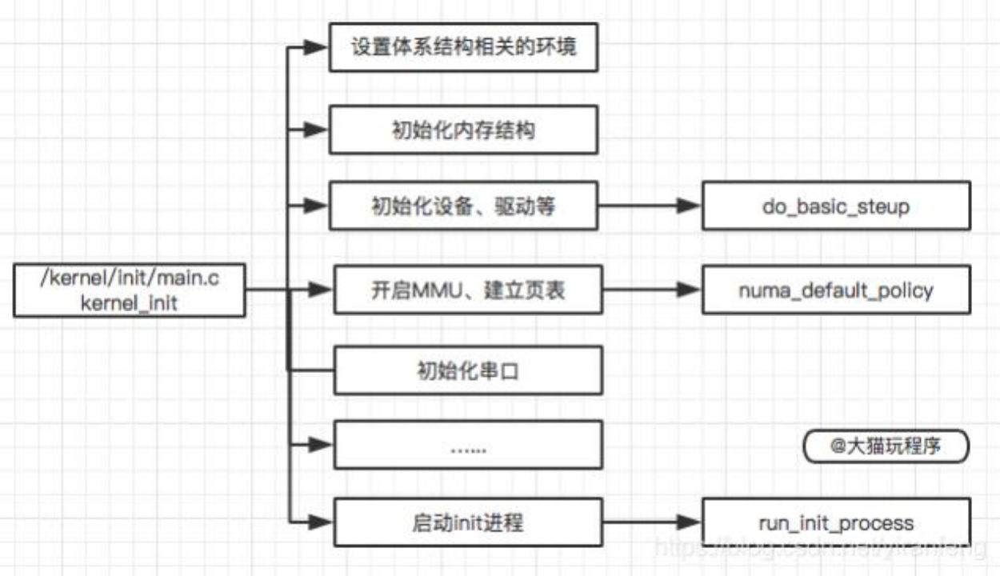

android系统启动流程
1、概述
大致启动顺序：
- BootRom->BootLoader->Linux Kernel->Init->Zygote->SystemServer->Launcher
BootLoader层：主要包括Boot Rom和Boot Loader
- Kernel层：主要是Android内核层
- Native层：主要是包括init进程以及其fork出 来的用户空间的守护 进程、 HAL层、开机动画等
- JAVA Framework层：主要是AMS和PMS等Service的初始化
- Application层：主要指SystemUI、 Launcher的启动
1.1 大致启动流程
1、手机开机后，引导芯片启动，引导芯片开始从固化在 ROM 里的预设代码执行，加载引导程序到到 RAM，bootloader检 查RAM，初始化硬件参数等功能；
2、硬件等参数初始化完成后，进入到Kernel层， Kernel层 主要加载一些硬件设备驱动，初始化进程管理等操作。在 Kernel 中首先启动swapper进程(pid=0)，用于初始化进程管理、内管 管理、加载Driver等操作，再启动 kthread进程(pid=2),这些linux系统的内核进程，kthread是所有内核进程的鼻祖；
3、Kernel层加载完毕后，硬件设备驱动与HAL层进行交互。初始化进程管理等操作会启动init进程(pid=1)，这些在Native层中；
4、 init进程(pid=1，init进程是所有用户进程的鼻祖，第一个启动)启动后，会启动 adbd，logd 等用户守护进程，并且会启动 ServiceManager(binder服务管家) 等重要服务，同时fork出 zygote 进程，这里属于 C++ Framework，代码为C++程序；
5、zygote进程是由init进程解析init.rc文件后fork生成，它会加载虚拟机，启动System Server(zygote孵化的第一个进程)； System Server负责启动和管理整个Java Framework，包含 ActivityManager， WindowManager， PackageManager， PowerManager等服务；
6、zygote同时会启动相关的APP进程，它启动的第一个APP 进程为Launcher，然后启动Email， SMS等进程，所有的APP进程 都有zygote fork生成。
2、init进程
2.1、概述
- init进程是linux系统中用户空间的第一个进程，进程号为1.
当bootloader启动后，启动kernel，
kernel启动完后，在用户空间启动init进程，
再通过init进程，来读取init.rc中的相关配置，从而来启动其他相关进程以及其他操作。
- init进程被赋予了很多重要工作， init进程启动主要分为两个阶段：
- 第一个阶段完成以下内容：
- ueventd/watchdogd跳转及环境变量设置
- 挂载文件系统并创建目录
- 初始化日志输出、挂载分区设备
- 启用SELinux安全策略
- 开始第二阶段前的准备
- 第二个阶段完成以下内容：
- 初始化属性系统
- 执行SELinux第二阶段并恢复一些文件安全上下文
- 新建epoll并初始化子进程终止信号处理函数
- 设置其他系统属性并开启属性服务
- 第一个阶段完成以下内容：
2.2 init进程如何被启动？

kernel 启动后，完成一些init的初始化操作，然后去系统根目 录下依次找 ramdisk_execute_command和execute_command设置的应用程序，如果这两个目录都找不到，就依次去根目录下找 /sbin/init， /etc/init， /bin/init,/bin/sh 这四个应用程序进行启动，只要这些应用程序有一个启动了，其他就不启动了。
Android系统一般会在根目录下放一个init的可执行文件，也就是 说Linux系统的init进程在内核初始化完成后，就直接执行init这个 文件。
2.3 init启动后，做了哪些事？
init进程启动后:
- 首先挂载文件系统、再挂载相应的分区
- 启动SELinux安全策略，启动属性服务，解析rc文件，并启动相应属性服务进程
- 初始化epoll，依次设置signal、 property、 keychord 这3个fd可读时相对应的回调函数。
- 进入无线循环，用来响应各个 进程的变化与重建。
2.4 kernel启动init进程 源码分析
系统启动之 SystemServer进程
- 当 zygote进是由init进程解析init.rc文件fork生成后，会加载虚拟机，启动System Server(zygote孵化的第一个进程)；

6.应用进程创建
App发起进程：点击一个桌面应用(例如微信)， Launcher 加载 应用， LauncherActivity 收到触发事件，组装Intent，通过binder 发送消息给 SystemServer 进程，调用Activity的startActivity()来启 动进程，启动Activity时，受ActivityManagerService-AMS的服务 控制， AMS属于SystemServer进程，因此SystemServer进行会通 过Process 来向Zygote发送一个Socket。
Zygote有一个无限循环， 一直在等待Socket请求， 收到 SystemServer 发来新的Socket请求后， Zygote调用系统的fork函 数来孵化一个新的进程，比如这里的微信。
再把启动的入口交给ActivityThread， 进入微信的进程中， 进行详细 的UI展示。
- 调用链：
LauncherActivity.onListItemClick —–> Activity.startActivity ——> Activity.startActivityForResult
—–> Instrumentation.execStartActivity —–> ActivityTaskManager.getService(IBinder)
同时
Instrumentation.execStartActivity —–> ActivityTaskManagerService.startActivity